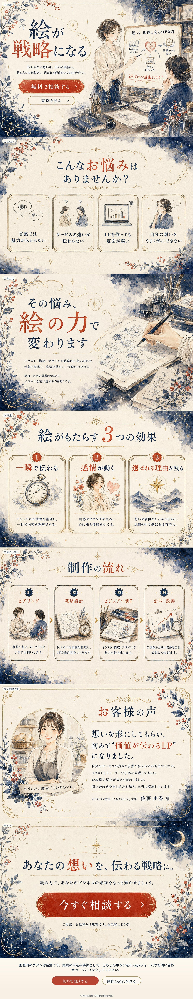

「絵が、戦略になる」という言葉に惹かれて
AI画像生成で「画像だけでLP」を試した制作記録
この言葉は、ZEROLIS主催者の長嶺圭一郎さんが開いた勉強会「絵が、戦略になる－ChatGPT Images 2.0で組み立てるマーケクリエイティブ」で紹介されていたものです。
勉強会では、ChatGPT Images 2.0を使い「画像だけでLPを組み立てる」という実演があり、私はその中で使われていた言葉に強く惹かれました。
特に惹かれたのは、「絵が」のあとに、読点「、」が入っているところです。
「絵が戦略になる」ではなく、「絵が、戦略になる」。
この少しの間（ま）があることで、絵がただの飾りではなく、ビジネスを前に進める力になるのだと、あらためて感じさせてくれました。

画像をクリックすると拡大してみられます
ただ、「絵が、戦略になる」とだけでLPを作成
まずはこの言葉だけをもとに、ChatGPT Images 2.0で作成しました。 できあがったLPは、明るく、親しみやすく、十分に魅力的なものでした。
ただ、勉強会で見たような独特の世界観、いわば「長嶺ワールド」とは少し違います。そこで長嶺さんに、どのように依頼すればあの雰囲気に近づけるのかを伺ってみました。
左の画像をクリックすると拡大されます。

画像をクリックすると拡大してみられます
色味とスタイルを指定して、「長嶺ワールド」が完成
そこで長嶺さんに、「『どのように描いてほしい』と依頼すればよいのか、プロンプトを知りたいです」と問い合わせてみました。
長嶺さんのご回答は、
『これに関してはちょっと複雑なことをしているので完全再現は厳しいかもですが
- ・ 配色4色のみ：墨絵の藍（深インディゴ）／朱色／生成り紙色（オフホワイト・和紙）／金色（ごく要所のみ）
- ・スタイル：墨絵×和×魔法使いのアトリエ
と入力すれば近い感じのものが出せると思います！
ただもっと簡単なのはこの絵自体をキャプチャーしてしまって「こんな感じで作って」とAIにお願いしちゃうことですw
だいたいそれでうまくいきますー^^
ChatGPT Images 2.0で、長嶺さんの言われた条件を追加してもう一度作成しました。……できました、長嶺ワールド！
ただきれいなだけではない、世界観のあるLPが生まれました。
同じ言葉から始めても、配色やスタイルを加えるだけで、見る人に与える印象は劇的に変わります。
右の画像をクリックすると拡大されます。